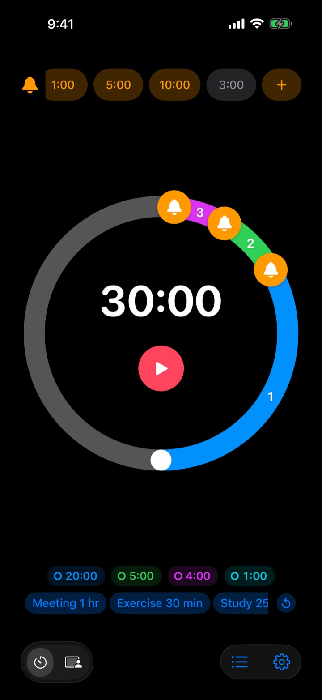
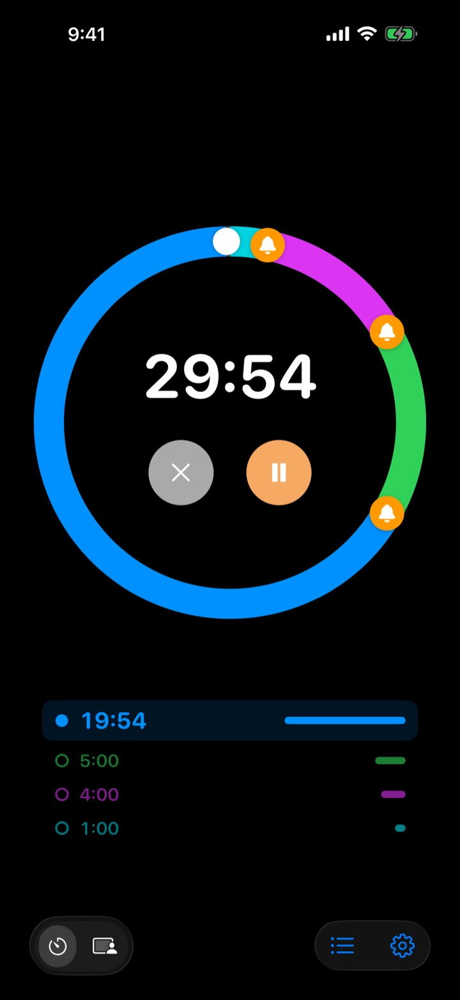
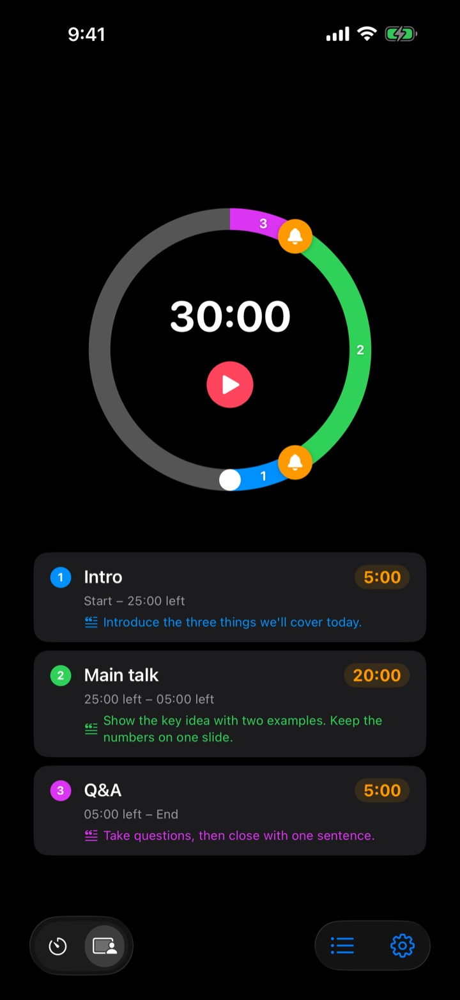
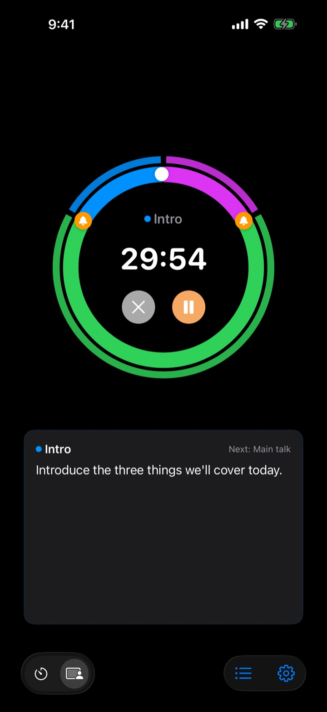

Know before
time runs out
5 minutes before your talk ends. 3 minutes before the meeting wraps. Rereminder taps you on the shoulder at every point you pick, so you can stop glancing at the clock.
Pre-alerts are free, with no limit. iPhone, Apple Watch and Mac.

Try it right here
Pick a length and your alerts, then press the red button. A minute passes in a second, and you hear each alert as it comes up.
Ever heard the timer when it was already too late?
A basic timer only rings at zero. Your talk ends before you reach the conclusion, class runs out before the recap, and the meeting slides into the next one with nothing decided. What you need isn't a sound that says time's up. It's a nudge while there's still time to wrap up.
Heads-ups before the end, as many as you want
Drag bells onto the dial at 10, 5 or 1 minute before the end, or anywhere else. There's no limit, and each alert can carry its own message, like "Wrap up the slides".
With the screen off, the time left stays on the Lock Screen and in the Dynamic Island, and your Apple Watch taps your wrist.

Split your talk into sections
Intro 5 minutes, main talk 20, Q&A 5. Give each section a name and a script. Every time a section changes you get an alert with its name, so your timing holds without you thinking about it. (Pro)

Your next line, right on screen
While it runs, the script for the current section and what comes next are shown large. Go past zero and it keeps counting, so you know exactly how far over you went. (Pro)

Three steps to start
- 1
Set the time
Turn the dial, or tap the time and type it in. One lap is 60 minutes, two laps 120.
- 2
Place your alerts
Tap a chip like 1:00 or 5:00 at the top, or drag a bell onto the dial.
- 3
Start and forget it
Lock your phone. Your iPhone and Apple Watch speak up at each moment you set.
Setups people use most
- 20-minute talk
- 5 min before "Move to the conclusion", 1 min before "Thank the audience"
- 50-minute class
- 10 min before "Explain the homework", 3 min before "Recap"
- 30-minute meeting
- 5 min before "Confirm the decisions"
- Pilates or yoga session
- Session Mode, one section per sequence (Pro)
- 25-minute study block
- 5 min before, then take a break
- 3-minute rest between sets
- 30 sec before "Get ready"
- One-hour mentoring session
- 15 min and 5 min before
Save the setups you reuse as templates and start them in one tap (Remember and up). You can also start or stop a timer with Shortcuts and Siri.
Pre-alerts are free. Pay only if you want it to remember.
Free
- Unlimited pre-alerts
- Your own message on every alert
- Live Activity on the Lock Screen and in the Dynamic Island
- Keep alerting until you answer, and end with a full alarm
- Apple Watch app and Mac menu bar
- Every theme color
Remember · Pro
- Remember: save setups as templates and start them in one tap
- Remember: reopen the app to your last setup
- Pro: everything in Remember, plus Session Mode with section names and scripts
- Pro: overtime, history and stats
Choose yearly or a one-time lifetime purchase for either plan. You can try Session Mode, overtime and history a few times before paying.
No ads. One Forever Pass also unlocks every app Leeo makes.
Questions
An alert didn't go off.
It's almost always permissions or Focus. Check notification access in the app under Settings › Notification Method. If you use a Focus, add Rereminder as an allowed app in iOS Settings › Focus. In Silent Mode you only get a vibration. If Rereminder is in Settings › Notifications › Scheduled Summary, its alerts are held back, so take it out.
Will I notice the end in Silent Mode?
Yes. Turn on End with a full alarm, and it rings loudly even in Silent Mode or a Focus. Turn on Keep alerting until I answer, and it repeats until you tap Stop or Snooze on the notification.
My Apple Watch isn't syncing.
Open Settings › My Devices in the app. It shows which step is missing. The watch needs to be paired with this iPhone, Rereminder needs to be installed on the watch, and you need to open it on the watch once after installing. After that the timer carries over even when the watch app is closed.
My Mac shows as not connected.
Connected means the app was open on that Mac within the last 10 minutes, so a Mac that just woke up appears a few minutes later. Both devices need the same iCloud account with iCloud Drive turned on. The Mac app needs macOS 26 or later.
I paid, but nothing unlocked.
Tap Restore Purchases on the plans screen, signed in with the same Apple Account you paid with. Lifetime purchases come back even after you delete the app or change devices.
My saved templates are locked.
They're still there. Without Remember or Pro they stay locked on screen, and they open again the moment you buy either one.
How do I get a refund?
Apple handles refunds. Request one at reportaproblem.apple.com with the Apple Account you paid with. If something was broken, please tell me too so the next person doesn't run into it.
Can I try it without installing?
Open m1zz.github.io/rereminder on your iPhone and the timer runs right away as an App Clip. The dial and alerts are all there. Templates, Session Mode and the watch app are in the full app.
Which devices does it run on?
iPhone with iOS 26 or later, Apple Watch with watchOS 11.6 or later, and Mac with macOS 26 or later. iPad isn't supported yet. The app comes in 24 languages.
Where is my data kept?
Timers, templates, section names, scripts and history all stay on your device, and they go away when you delete the app. The app only sends anonymous usage stats that help fix it. The privacy policy lists exactly what.
Questions or feedback? Write to leeo@kakao.com. I usually reply within 2 to 3 days.